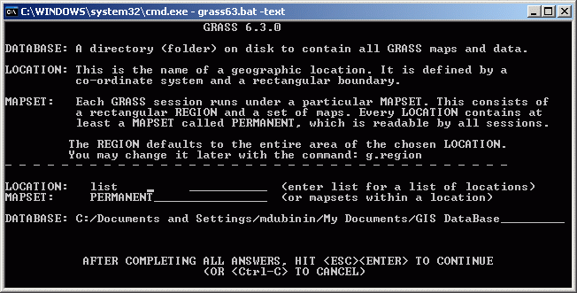
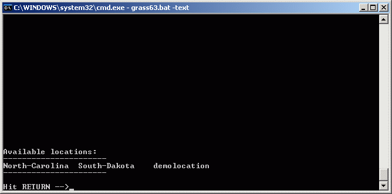
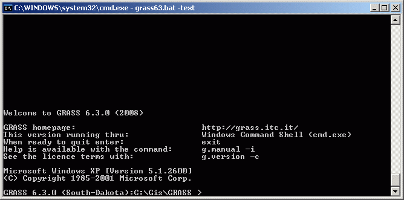
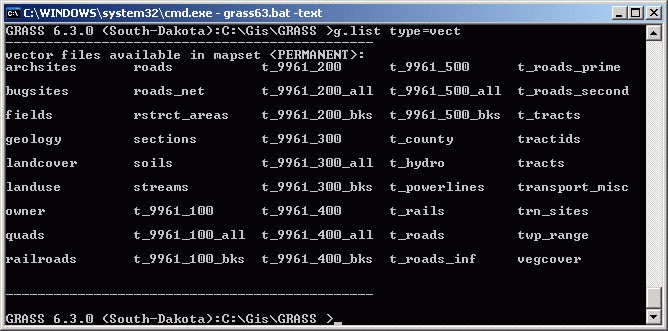
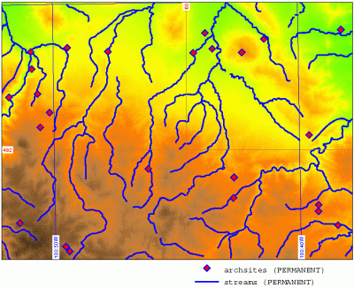

Первые шаги в освоение GRASS для Windows с управлением через командную строку
Оглавление
Данная статья иллюстрирует начало работы с winGRASS, первой версией ГИС GRASS работающей в ОС Windows без эмуляции (так как работали под Windows предыдущие версии GRASS), для данной статьи использовалась версия GRASS 6.3.
Подразумевается что GRASS был установлен под Windows с тестовыми наборами данных South Dakota (spearfish) и North Carolina, примеры иллюстрируют работу именно с этими наборами данных. Напомним, что по умолчанию эти данные устанавливаются в папку C:/Documents and Settings/user/My Documents/GIS DataBase, при установке GRASS нужно не забыть указать, что их необходимо установить.
Подробное описание работы с GRASS можно найти на странице обучающего пособия по GRASS.
Хотя GRASS имеет и графический интерфейс, в данной статье мы рассматриваем только вариант работы из командной строки, как наиболее продуктивный засчет возможности автоматизации. Также показываются некоторые общие особенности работы командного интерпретатора, с которыми придется столкнуться пользователю, начинающему работу с GRASS.
Первый запуск GRASS проще осуществить из командного интерпретатора Windows (Пуск/Запустить):
cmd
Переместимся в папку в которую установлен GRASS (в нашем случае c:\gis\grass) и запустим его с ключем -text, который запустит GRASS в консольном режиме (без графического интерфейса).
cd c:\gis\grass grass63.bat -text
В дальнейшем для запуска GRASS удобно создать ярлык с полной командой запуска:
c:\gis\grass\grass63.bat -text
Появившееся окно даст возможность выбрать начальную область (location) и набор данных (mapset). Введем в поле LOCATION слово list и нажмем ESC+ENTER:

Появится окно, которое покажет доступные области, которые должны были быть установлены вместе с GRASS:

Выйдем обратно в окно выбора области нажав ENTER. Введем в поле LOCATION одно из названий областей, которые мы имеем, допустим это будет South Dakota, название должно точно соответствовать тому, которое выводилось в списке list'ом, иначе будет предложено создать новую область. Если имя области введено верно, GRASS выведет краткую информацию о программе, версию GRASS и название текущей рабочей области.

Перед тем как вводить команды нужно определиться, как получить по ним справку, ее помощью придется воспользоваться не раз. Справка к команде вызывается ключем help. Если название команды вводится без параметров, то обычно ничего не происходит, командой возвращается пустая строка. Например если ввести команду вывода списка слоев:
g.list
То результатом будет просто пустая строка. Для того, чтобы для любой команды посмотреть ее параметры, необходимо выполнить эту команду с ключом -help.
g.list -help
Результатом будет описание данной команды и ее параметров. Параметры вводятся как есть, имя от значения отделяется пробелом, иногда те или иные названия параметров можно опускать (например type=, map= и другие, обычно эти параметры указываются без квадратных скобок в системе помощи). Например, посмотрим все-таки список векторных слоев в выбранной нами области, это можно сделать двумя способами:
g.list type=vect g.list vect

Теперь мы знаем какие слои находятся в текущей области и начнем создавать на их основе карту.
Удобный способ автоматизации вывода карт, использование команды ps.map с соответствующим файлом - описанием карты. Описание представляет из себя текстовый файл, где перечислены слои, с параметрами их визуализации, а также зарамочное оформление карты и другие элементы.
Общий формат файла описания карты состоит из набора блоков, начинаемых определенной командой из следующего списка:
[ border | colortable | comments | copies | eps | geogrid | greyrast | grid | group | header | labels | line | mapinfo | maploc | maskcolor | outline | paper | point | psfile | raster | read | rectangle | region | rgb | scale | scalebar | setcolor | text | vareas | vlines | vpoints | vlegend | end ]
Подробная информация о каждой команде доступна на странице описания модуля ps.map GRASS Wiki.
Каждая команда имеет ряд возможных параметров. Общий формат задания команд следующий:
команда {слой}
{параметры}
{end}
Команды могут включать и не включать имя слоя, некоторые команды не связаны с каким-либо слоями, например показывание легенды или шкалы масштаба. У команды также может не быть параметров, в этом случае слово end не обязательно.
Рассмотрим пример такого файла по частям, все слои используемые в этом примере находятся в области South-Dakota. Для начала, укажем слой рельефа в качестве фонового.
raster elevation.10m
На него положим точечный слой археологичестких памятников с точками синего цвета и гидрологию, так же синего цвета с толщиной линии 2.
vpoints archsites
color blue
size 10
end
vlines streams
color blue
width 2
end
Так же нанесем две сетки, одну - прямоугольную, через каждые 10 тысяч метров, красного цвета, с подписыванием каждой линии, а другую - географическую, синего цвета, также подписанную на каждой линии, которые проложим через каждые 30 минут.
grid 10000
color red
numbers 1 red
end
geogrid 10 m
color blue
numbers 1 blue
end
Поместим на карту легенду:
vlegend
where 4.5 0
font Courier
fontsize 12
end
Полученный map-файл нужно экспортировать в графический формат ps и/или pdf с помощью команд ps.map и ps2pdf:
ps.map input=dakota.map output=dakota.eps
ps2pdf dakota.eps dakota.pdf
Результирующая карта должна выглядеть примерно таким образом:

Как было указано выше для команды g.list, некоторые из названий параметров можно опускать, также можно сокращать другие названия параметров, например, приведенной выше команде ps.map соответствует такая форма, с сокращениями in (вместо input) и out (вместо output):
ps.map in=dakota.map out=dakota.eps
Дата создания: 12.05.2008
Автор(ы): Максим Дубинин